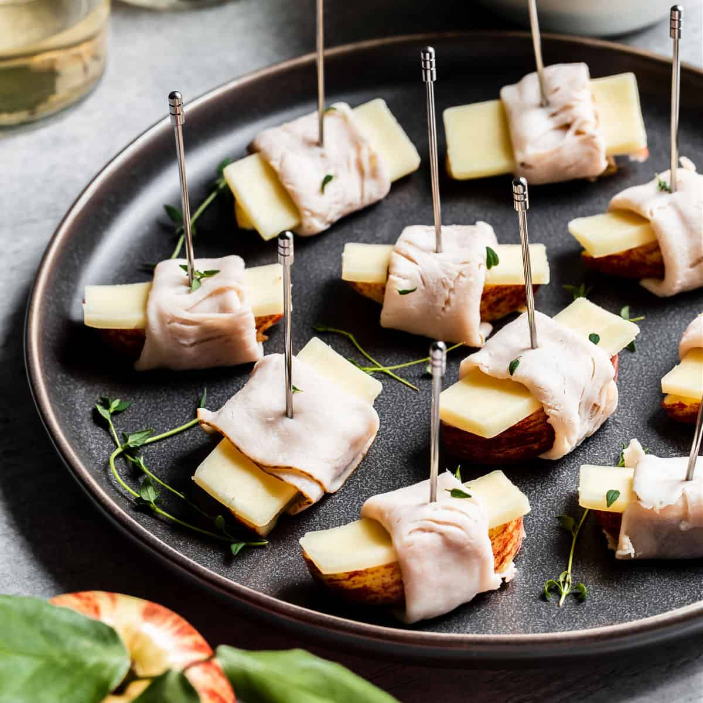

Food Blog
Món khai vị
Appetizer (món khai vị) là món ăn hoặc đồ uống nhỏ, nhẹ nhàng phục vụ trước bữa chính nhằm kích thích vị giác, "đánh thức" sự thèm ăn cho các món tiếp theo trong bữa tiệc. Chúng có thể nóng hoặc lạnh, khẩu phần nhỏ, và có ở nhiều nền ẩm thực khác nhau (như gỏi, nem ở Việt Nam, hoặc phô mai, bánh quy ở phương Tây), giúp mở đầu bữa ăn một cách hấp dẫn. Món khai vị mang đến những trải nghiệm thú vị giúp thực khách cảm nhận được sự đặc biệt của bữa tiệc ngay từ đầu.
Món chính
Main course (món chính) là phần quan trọng nhất, thịnh soạn nhất trong một bữa ăn nhiều món, thường được phục vụ sau món khai vị (như súp, gỏi, salad) và trước món tráng miệng. Món chính cung cấp dinh dưỡng và năng lượng chính, thường tập trung vào thịt, cá hoặc hải sản được chế biến đa dạng như nướng, xào, kho, hấp. Tùy theo phong cách ẩm thực Món chính không chỉ mang đến sự phong phú về hương vị mà còn giúp thực khách cảm nhận được sự tinh tế trong ẩm thực.